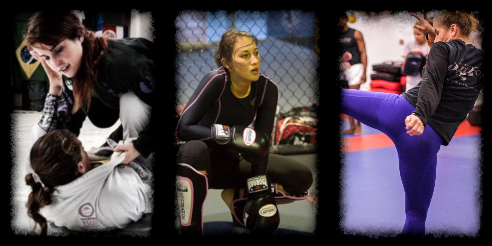
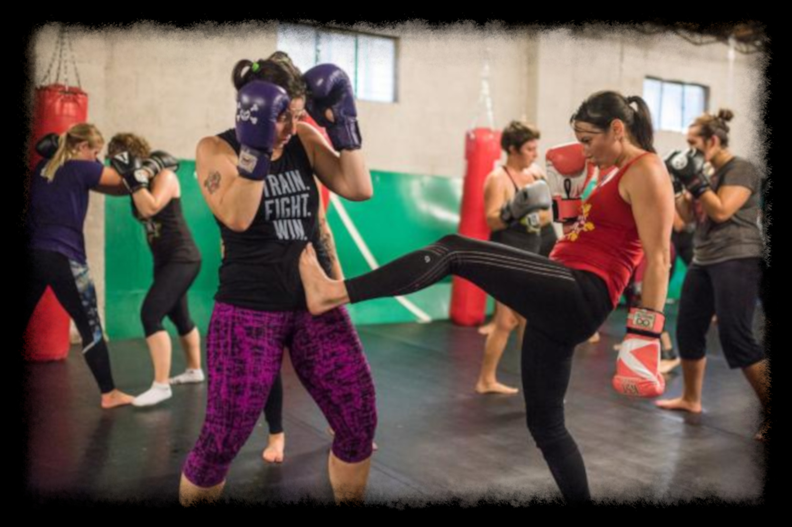

Despite the continually increasing number of women getting involved in MMA and BJJ at all levels of the sports, they are still very much male-dominated. At Team Impact, we actively encourage the increase in female participants, but are aware that it can be a little daunting for a female beginner to start training in classes that contain mostly men. Because of this, we run Women's classes in MMA and BJJ, taught by our Women's instructor Carrie Canning. Classes are small, friendly, open to women of any level and, most importantly, fun and a great method of stress relief.
Women's Classes
What is the training like in the Women's classes?
In addition to featuring the standard training involved in our MMA, BJJ and Muay Thai programmes, the Women's classes focus more on the applications of these arts within the context of a self defence situation — the root cause of their development. Various self-defence situations are presented in class, strategies are discussed and participants live drill techniques from these arts that are deemed appropriate for the situation.
What Women's classes are available?
Please view the table below to see our available Women's classes.
| Classes Available - Womens | |
|---|---|
| Class Type | Minimum Experience Requirement |
| Women's BJJ |
|
| Women's MMA | |
| Women's Muay Thai |
What equipment do I need for Women's classes?
Sparring for the Women's MMA and Muay Thai classes is optional. If you wish to do so, please wear a level of protective equipment deemed appropriate by Carrie. Please see the table below to view the equipment required for each of our Women's classes, taking into account the Gym Rules in relation to this subject. If you wish to do a particular class but do not have the mandatory equipment needed, we have a limited supply on the premises. However, we cannot guarantee you will be able to use it so it is strongly recommended that you bring your own. If you wish to buy some equipment, check out our list of useful links to get you started.
| Equipment Required - Women's Classes | ||
|---|---|---|
| Class Type | Mandatory Equipment | Optional (but recommended) Equipment |
| Women's BJJ |
Gi:
|
Gi:
|
| Women's MMA |
|
|
| Women's Muay Thai |
|
|